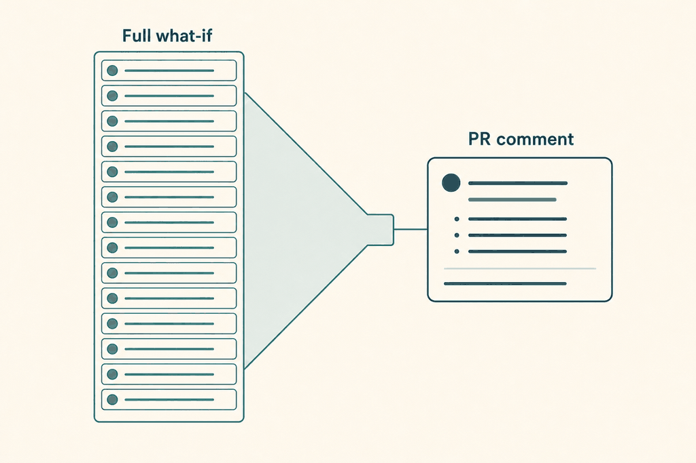
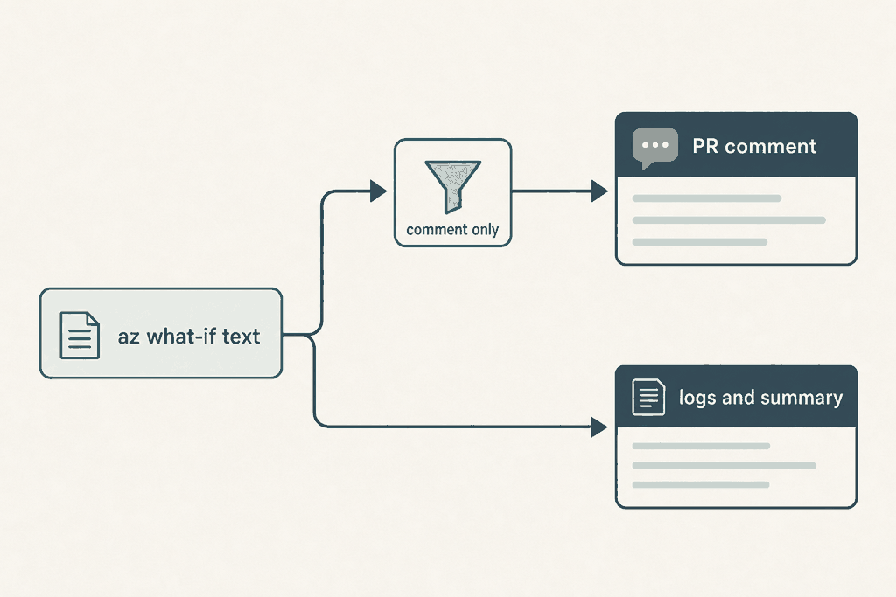

Plan: What-if comment filter (#58)

Purpose
Let a team hide change types (and optionally one resource type) from the what-if pull request comment, so that known noise such as a Modify that appears on every run stops burying real changes. The filter is presentation only: the comment says what it hid and how many, and nothing that decides or records the deployment sees it.
Problem
Some resource types report Modify on every what-if although nothing changes. Reviewers learn to scroll past the diff, which is the habit that lets a real change slip through. Today the only control is Azure's own --exclude-change-types, which the action already uses for Ignore and NoChange, and which cannot be used for the comment without also changing what the summary and the safety checks see.
Solution
Two plan-job settings, whatif_comment_exclude_change_types and whatif_comment_exclude_resource_types, empty by default. A new sourced script, scripts/whatif-filter.sh, drops matching resource blocks from the text of the what-if between the log and the comment, in classic and stack mode, and writes a tally for a visible notice. Delete and Detach fail the plan. The log, whatif-summary.json, the delete gate and the determinism check are produced from other inputs and are not touched. Anything the filter cannot parse is shown, never hidden.

Delete and Detach fail the plan before Azure is called. whatif-summary.json keeps schemaVersion 1 and unfiltered counts. Unknown layout or a count mismatch shows everything.Relevant Files
Existing Files
- existing
scripts/az-deploy.sh— classic text becomes the comment in log_output (lines 34-142); stack text becomes the diff in stack_whatif_gate (lines 388-508); write_summary (167-210) must stay untouched - existing
scripts/pr-comment.sh— joins step_*.md files and enforces the 60000 / 65000 limits (#23); read only, behaviour checked by a test - existing
.github/actions/plan/action.yml— two new inputs and two env lines in the What-if step (lines 215-245) - existing
.azuredevops/templates/plan-stage.yml— download list (lines 77-90) needs the new script; variables reach az-deploy.sh as environment automatically - existing
.azuredevops/templates/deploy-stage.yml— download list (line 97 area): az-deploy.sh sources the new script, so the deploy stage needs it too - existing
.azuredevops/ms.azure.deploy.yml— single-file pipeline: two download lists (lines 91-100 and 316-324) and the commented variables block - existing
.azuredevops/README.md— variable list gets the two new variables - existing
docs/configuration.md— settings table (line 26 on) and a new section - existing
docs/how-it-works.md— "The what-if" (line 108) and "What-if summary file" (line 269): the "counts match the comment" bullet - existing
docs/troubleshooting.md— new row for the Delete configuration error - existing
docs/examples/github/recommended.yml— commented example of the new inputs - existing
docs/examples/azure-devops/multi-environment.yml— commented example of the new variables - existing
README.md— settings summary, as #50 did for existing_tags_resource_groups
New Files
- new
scripts/whatif-filter.sh— sourced library: whatif_filter_validate, whatif_filter_text, whatif_filter_notice - new
tests/whatif-filter.test.sh— plain bash test runner, no framework - new
tests/az-deploy-stub.test.sh— runs az-deploy.sh with a stub az on PATH that prints fixtures; compares the .md, the log and whatif-summary.json with and without the filter - new
tests/fixtures/classic-mixed.txt— classic what-if text with Create, Modify, Delete, a child resource and a Scope: line - new
tests/fixtures/stack-mixed.txt— stack what-if text; symbols for Detach and Unsupported marked as UNCONFIRMED until captured from a real run - new
tests/fixtures/whatif-summary-classic.json— a normalised change list used to prove the summary does not depend on the filter - new
specs/0005-whatif-comment-filter/hero.png, solution.png— plan images
Implementation Phases
IMPORTANT: Execute every phase and task step by step, in order, top to bottom.
Status markers: [] idle · [wip] in progress · [x] complete · [f] failed. All start as []; the Build Plan workflow updates them as it works.
[] Phase 1: Filter library, fixtures and tests
Build the filter as a sourced script that can be tested without Azure. Nothing is wired in yet, so this phase cannot change behaviour. Tests first: the repository has no test directory, so this phase also creates tests/.
1. Capture real text and settle the symbols
[]Run a classic what-if and a stack what-if on a scratch subscription (or find one in a past run's logs artifact,step_a1_what-if.log) and copy the raw text, not the Markdown, intotests/fixtures/classic-real.txtandtests/fixtures/stack-real.txt. Remove subscription IDs and resource names that identify anyone before committing: this is a public repository.[]Write down which symbol the stack text uses forDetach,UnsupportedandNoChange. The existing stacksed(az-deploy.sh line 489) accepts[-+~xv!=], but nothing in the repository maps them to change types. Add confirmed ones to thesymtable in the awk. A symbol that stays unconfirmed stays out of the table, so those blocks are never hidden.[]If no real stack output can be obtained before the build, ship with the hand-writtenstack-mixed.txtmarkedUNCONFIRMEDin its first line and keepUnsupportedout of the accepted values until it is confirmed (see Questionables).
2. Write the fixtures
[]Createtests/fixtures/classic-mixed.txtwith the content below. It has a legend (must not be read as blocks), aScope:line, a zone, a second zone, a child record of the second zone, a create, a delete and the summary line.Note: The result may contain false positive predictions (noise). You can help us improve the accuracy of the result by opening an issue here: https://aka.ms/WhatIfIssues. Resource and property changes are indicated with these symbols: - Delete + Create ~ Modify The deployment will update the following scope: Scope: /subscriptions/00000000-0000-0000-0000-000000000000/resourceGroups/rg-app ~ Microsoft.Network/privateDnsZones/a.example [2020-06-01] ~ tags.owner: "a" => "b" ~ Microsoft.Network/privateDnsZones/b.example [2020-06-01] ~ tags.owner: "a" => "b" ~ Microsoft.Network/privateDnsZones/b.example/A/www [2020-06-01] ~ properties.ttl: 3600 => 300 + Microsoft.Storage/storageAccounts/stnew [2023-01-01] location: "westeurope" sku.name: "Standard_LRS" - Microsoft.Network/privateDnsZones/old.example [2020-06-01] Resource changes: 1 to create, 3 to modify, 1 to delete.[]Createtests/fixtures/stack-mixed.txt: the same shape starting at the lineResource and property changes, with=NoChange blocks and the confirmed Detach and Unsupported symbols.
3. Write scripts/whatif-filter.sh
[]Validation, sourced by az-deploy.sh. It setsWHATIF_FILTER_ERRORand returns 1; it never exits, so the caller decides how to fail.# scripts/whatif-filter.sh (sourced; POSIX awk only, so it runs on ubuntu mawk and macOS awk) WHATIF_ALLOWED='create modify deploy nochange ignore noeffect unsupported' # Prints an error text and returns 1 on a bad configuration. Reads # WHATIF_COMMENT_EXCLUDE_CHANGE_TYPES and WHATIF_COMMENT_EXCLUDE_RESOURCE_TYPES. whatif_filter_validate() { local ct rt t ct=$(printf '%s' "${WHATIF_COMMENT_EXCLUDE_CHANGE_TYPES-}" | tr -d '[:space:]' | tr '[:upper:]' '[:lower:]') rt=$(printf '%s' "${WHATIF_COMMENT_EXCLUDE_RESOURCE_TYPES-}" | tr -d '[:space:]') if [ -z "${ct}" ] && [ -z "${rt}" ]; then return 0; fi if [ -z "${ct}" ]; then WHATIF_FILTER_ERROR='whatif_comment_exclude_resource_types needs whatif_comment_exclude_change_types: it narrows the change types, it does not select them.' return 1 fi for t in $(printf '%s' "${ct}" | tr ',' ' '); do case "${t}" in delete|detach) WHATIF_FILTER_ERROR="whatif_comment_exclude_change_types cannot hide ${t}. Deletes and detaches must always be visible in the plan comment."; return 1;; esac case " ${WHATIF_ALLOWED} " in *" ${t} "*) ;; *) WHATIF_FILTER_ERROR="Unknown change type '${t}' in whatif_comment_exclude_change_types. Allowed: Create, Modify, Deploy, NoChange, Ignore, NoEffect, Unsupported."; return 1;; esac done return 0 }[]The filter. The awk program is embedded in the script in a quoted here-doc, not kept as a second file, because the Azure DevOps download lists fetch one file per name and a second file would need its own entry in four lists. It is shown here as a separate program for readability.# whatif_filter_text TALLY_FILE < raw az text > kept text # TALLY_FILE gets lines "count<TAB>changetype<TAB>resourcetype" for what was hidden. whatif_filter_text() { awk -v changes="${WHATIF_COMMENT_EXCLUDE_CHANGE_TYPES-}" \ -v rtypes="${WHATIF_COMMENT_EXCLUDE_RESOURCE_TYPES-}" \ -v tallyfile="${1}" "${WHATIF_AWK_PROGRAM}" } # the program (next block) is held in a variable, read from a quoted here-doc: # IFS= read -r -d '' WHATIF_AWK_PROGRAM <<'AWK' ... AWK function lc(s) { return tolower(s) } function trim(s) { gsub(/^[ \t]+|[ \t]+$/, "", s); return s } # "Microsoft.Network/privateDnsZones/a.com/A/www [2020-06-01]" -> "Microsoft.Network/privateDnsZones/A" function rtype(name, n, a, i, t) { sub(/ \[.*$/, "", name) n = split(name, a, "/") t = a[1] for (i = 2; i <= n; i += 2) t = t "/" a[i] return t } function flush( hide) { if (!inblock) return hide = (btype != "" && (btype in ct) && (nrt == 0 || (lc(brt) in rt))) if (hide) { tally[btype "\t" brt]++ } else { printf "%s", buf } buf = ""; inblock = 0 } BEGIN { n = split(changes, c, ","); for (i = 1; i <= n; i++) if (trim(c[i]) != "") ct[lc(trim(c[i]))] = 1 n = split(rtypes, r, ","); nrt = 0 for (i = 1; i <= n; i++) if (trim(r[i]) != "") { rt[lc(trim(r[i]))] = 1; nrt++ } sym["+"] = "create"; sym["-"] = "delete"; sym["~"] = "modify"; sym["!"] = "deploy" sym["="] = "nochange"; sym["*"] = "ignore"; sym["x"] = "noeffect" # stack symbols for detach / unsupported: confirm from a real run before adding (Phase 1, task 1) } { line = $0 # A block header: two spaces, a symbol, then Type/name. The legend lines # (" + Create") have no "/" and so are not headers. if (match(line, /^ [-+~=*!xv] [A-Za-z0-9.]+\/[^ ]+/)) { flush() s = substr(line, 3, 1); rest = substr(line, 5) inblock = 1; btype = (s in sym) ? sym[s] : "" # unmapped symbol: never hidden brt = rtype(rest); buf = line "\n"; next } if (line ~ /^(Resource changes:|Scope:|The deployment will)/) { flush(); print line; next } if (inblock) { buf = buf line "\n"; next } print line } END { flush() if (tallyfile != "") for (k in tally) print tally[k] "\t" k > tallyfile }[]The notice. Print canonical change type names (Modify, notmodify) with a small lookup, so the text reads as the issue's example does.# whatif_filter_notice TALLY_FILE -> Markdown block quote on stdout, or nothing whatif_filter_notice() { [ -s "${1}" ] || return 0 local by="whatif_comment_exclude_change_types" [ -n "${TF_BUILD-}" ] && by="WHATIF_COMMENT_EXCLUDE_CHANGE_TYPES" local total groups total=$(awk -F'\t' '{n += $1} END {print n+0}' "${1}") groups=$(sort -t$'\t' -k2,2 -k3,3 "${1}" | awk -F'\t' -v max=8 ' NR <= max { printf "%s%d `%s` change%s on `%s`", (NR > 1 ? ", " : ""), $1, $2, ($1 == 1 ? "" : "s"), $3 } END { if (NR > max) printf " and %d more groups", NR - max }') printf '> Hidden from this comment: %s, by `%s`. The full what-if is in the logs artifact. The deployment and `whatif-summary.json` are not affected.\n' "${groups}" "${by}" }[]Addwhatif_filter_active: returns 0 whenWHATIF_COMMENT_EXCLUDE_CHANGE_TYPESis non-empty after trimming. Everything else short-circuits on it, so the default path never calls awk.[]Fail open (below) belongs inwhatif_filter_texttoo: when an unmapped symbol is seen or a hidden total exceeds the text's ownResource changes:total, print the original text and write one tally line with change type_failopen;whatif_filter_noticeturns that into "could not be applied, nothing was hidden".# fail open: compare what was hidden with what the text says exists # "Resource changes: 1 to create, 2 to modify, 1 to delete." (classic) awk -F'\t' -v line="${summary_line}" ' BEGIN { n = split(line, p, /[,.:] */) } # sketch: build total[type] from "N to <type>" { hidden[$2] += $1 } END { for (t in hidden) if (t in total && hidden[t] > total[t]) exit 1 }' "${tally}" || { # show everything, add a note filtered=$(cat "${1}") notice="> The what-if comment filter could not be applied to this output, so nothing was hidden." }
4. Write tests/whatif-filter.test.sh
[]A plain bash runner, no framework. It sources the library, runs the filter over the fixtures and compares. Cases: empty settings are the identity; Modify on one resource type hides the zone and its child record and keeps the create, the delete and the summary line; the tally is exact; Modify without a resource type hides every modify; the legend lines are never treated as blocks; an unmapped symbol is kept; Delete, Detach, an unknown value and resource types alone are rejected.#!/usr/bin/env bash # tests/whatif-filter.test.sh (run: bash tests/whatif-filter.test.sh) set -u here=$(cd "$(dirname "${BASH_SOURCE[0]}")" && pwd) source "${here}/../scripts/whatif-filter.sh" fail=0 check() { # name, expected, actual if [ "${2}" = "${3}" ]; then echo "ok ${1}"; else echo "FAIL ${1}"; diff <(printf '%s\n' "${2}") <(printf '%s\n' "${3}") | head -20; fail=1; fi } run() { # change types, resource types, fixture -> kept text; tally in ${tally} WHATIF_COMMENT_EXCLUDE_CHANGE_TYPES="${1}" WHATIF_COMMENT_EXCLUDE_RESOURCE_TYPES="${2}" \ whatif_filter_text "${tally}" < "${here}/fixtures/${3}" } tally=$(mktemp); trap 'rm -f "${tally}"' EXIT # 1. defaults: empty settings give the input back byte for byte check 'empty is identity' "$(cat "${here}/fixtures/classic-mixed.txt")" "$(run '' '' classic-mixed.txt)" # 2. Modify on one type hides the zone and its child record, keeps Create and Delete out=$(run 'Modify' 'Microsoft.Network/privateDnsZones' classic-mixed.txt) check 'zone modify hidden' 0 "$(grep -c 'privateDnsZones/a.example' <<< "${out}")" check 'create kept' 1 "$(grep -c 'storageAccounts/stnew' <<< "${out}")" check 'delete kept' 1 "$(grep -c 'old.example' <<< "${out}")" check 'summary line kept' 1 "$(grep -c '^Resource changes:' <<< "${out}")" check 'tally' $'2\tmodify\tMicrosoft.Network/privateDnsZones\n1\tmodify\tMicrosoft.Network/privateDnsZones/A' "$(sort -k3 "${tally}")" # 3. validation for bad in Delete delete,Modify Detach Bogus; do WHATIF_COMMENT_EXCLUDE_CHANGE_TYPES="${bad}" whatif_filter_validate && { echo "FAIL ${bad} accepted"; fail=1; } || echo "ok rejects ${bad}" done WHATIF_COMMENT_EXCLUDE_CHANGE_TYPES='' WHATIF_COMMENT_EXCLUDE_RESOURCE_TYPES='Microsoft.X/y' \ whatif_filter_validate && { echo 'FAIL resource types alone accepted'; fail=1; } || echo 'ok rejects resource types alone' exit "${fail}"
5. Testing Strategy
Bash, awk, jq and shellcheck only; no Azure access. Edge cases: the awk treats any line that is not a header, a Scope: line or a summary line as part of the open block, so a blank line inside a multi-line property value stays in its block and the next header closes it; add that as a fixture case. Also test CRLF input and a name containing regex characters.
[]bash tests/whatif-filter.test.sh— all cases print "ok" and exit 0[]shellcheck scripts/whatif-filter.sh tests/whatif-filter.test.sh— no warnings; awk is invoked on both ubuntu mawk and macOS awk[]bash -c 'source scripts/whatif-filter.sh; WHATIF_COMMENT_EXCLUDE_CHANGE_TYPES=Delete whatif_filter_validate; echo $?'— prints 1: Delete cannot be hidden[]git diff --stat -- scripts/az-deploy.sh— empty: this phase changes no existing file
[] Phase 2: Wire the filter into az-deploy.sh
Call the validation early, then insert the filter between the raw text and the existing sed and diff_safe steps, for classic and stack. The order of the code is the guardrail: the summary, the gate and the checks are computed from JSON before or independently of the filter, and the filter only ever produces a different .md file.
1. Validate before any Azure call
[]Source the library and validate in the what-if action, after therm -f "${summary_file}"at lines 211-213, so a stale summary cannot survive a configuration error. A failed validation exits 1 with an::error::or##[error]line and a## What-ifMarkdown section, the same way the Bicep and subscription failures do (lines 259-267, 276-284). Nowhatif-summary.jsonis written, which a gate already treats as fail closed.# scripts/az-deploy.sh, right after "rm -f ${summary_file}" (line 211-213), only for what-if if [ "${SCRIPT_ACTION}" = 'what-if' ]; then rm -f "${summary_file}" # shellcheck source=whatif-filter.sh source "$(dirname "${BASH_SOURCE[0]}")/whatif-filter.sh" if ! whatif_filter_validate; then if test -n "${TF_BUILD-}"; then echo "##[error]${WHATIF_FILTER_ERROR}"; else echo "::error::${WHATIF_FILTER_ERROR}"; fi printf '%s\n' "## What-if" "" "${WHATIF_FILTER_ERROR}❗" > "${log/.log/.md}" exit 1 fi fi[]The validate action does not receive the new variables, so it neither filters nor validates; only what-if does.
2. Classic: filter in log_output
[]Filter only whenWHATIF_FILTER_APPLY=1. The call at line 586 sets it for that one call; theERRtrap path (error(), line 31) callslog_outputwithout it, so a failed what-if is always shown whole. Inside the function,datais built from the filtered text, the notice goes first in the section, and the 5000-character fold uses the filtered length.# scripts/az-deploy.sh, log_output (lines 41-46), classic what-if branch only if [ "${SCRIPT_ACTION}" = 'what-if' ]; then local filtered tally filtered=$(cat "${1}") if [ "${WHATIF_FILTER_APPLY-}" = '1' ] && whatif_filter_active; then tally=$(mktemp) filtered=$(whatif_filter_text "${tally}" < "${1}") whatif_filter_notice "${tally}" > "${tally}.md" rm -f "${tally}" fi data=$(printf '%s\n' "${filtered}" | \ sed -r 's/^([[:space:]]+)([-+~x])[[:space:]]/\2\1/g' | sed -e 's/^~/!/g' | diff_safe) hidden_notice=$(cat "${tally}.md" 2>/dev/null || true) fi # ...and at the output assembly (lines 87-97): notice first, then the fold decision on ${#data} if [ "${SCRIPT_ACTION}" = 'what-if' ] && test -n "${data}"; then test -n "${hidden_notice}" && output+="\n\n${hidden_notice}" # unchanged: fold over 5000 characters of the FILTERED data fi # at the call (line 585-586), so that error() -> log_output never filters: eval "${cmd}" 1> >(tee -a "${log}") 2> >(tee -a "${log}" >&2) WHATIF_FILTER_APPLY=1 log_output "${log}" '' ''[]Do not touch lines 591-621: the second,ResourceIdOnlywhat-if andwrite_summarynever see the filter, so the counts are unfiltered by construction.
3. Stack: filter the diff only
[]Instack_whatif_gatereplace only thediff=assignment at line 489 and append the notice tobodyafter the gate text. The head line (counts), the delete and detach lists, the unsupported note,gateand thewrite_summarycall (lines 475-488) stay as they are and above it.# scripts/az-deploy.sh, stack_whatif_gate, line 489. The gate, summary and notes above it are not touched. filtered="${text}" notice='' if whatif_filter_active; then tally=$(mktemp) filtered=$(whatif_filter_text "${tally}" <<< "${text}") notice=$(whatif_filter_notice "${tally}") rm -f "${tally}" fi diff=$(sed -r 's/^([[:space:]]+)([-+~xv!=])[[:space:]]/\2\1/g' <<< "${filtered}" | sed -e 's/^~/!/g' | diff_safe) body="${head}${notes}" if test -n "${gate}"; then body=":no_entry: ${gate}${nl}${nl}${body}"; fi if test -n "${notice}"; then body+="${nl}${nl}${notice}"; fi # after head, notes and the gate: nothing above is changed[]The gate runs twice in a delete mode (once in the plan and again in the deploy job, lines 517-524). The deploy job does not set the new variables, so its.mdis unfiltered; that is correct, because it is not the plan comment.
4. Keep the comment size handling correct
[]No change topr-comment.sh. Verify with a test that the notice survives truncation: it is the first thing in the what-if section, so the 65000 cut (line 67) takes the end of the diff first. Document the one exception: a section over 60000 characters is replaced whole by the "too long" pointer (lines 24-26), and the notice goes with it.
5. Testing Strategy
Drive log_output and the stack diff assembly with a stub az on PATH that prints the fixture, so the real code path runs without Azure. The stub returns the fixture for az deployment ... what-if and canned JSON for the ResourceIdOnly call and for az stack-whatif show. Compare the produced step_a1_what-if.md and whatif-summary.json with and without the filter.
[]bash tests/az-deploy-stub.test.sh— with the filter unset the .md is byte-identical to the one from the unmodified script (keep a golden copy generated from the parent commit); with it set the .md differs only by the dropped blocks and the notice[]cmp <(jq -S . with/whatif-summary.json) <(jq -S . without/whatif-summary.json)— the summary is identical with and without the filter[]cmp with/step_a1_what-if.log without/step_a1_what-if.log— the log is identical: Azure output is kept whole[]WHATIF_COMMENT_EXCLUDE_CHANGE_TYPES=Delete bash scripts/az-deploy.sh what-if— exits 1 before calling az; stdout has "cannot hide delete"; no summary file exists[]shellcheck scripts/az-deploy.sh scripts/whatif-filter.sh— no new warnings[]git diff -U0 scripts/az-deploy.sh | grep -n "write_summary\|summary_error\|nondeterministic\|STACK_APPROVED"— no changed line touches the summary, the gate or the delete check
[] Phase 3: Inputs for GitHub and Azure DevOps
Expose the two settings. GitHub gets inputs on the plan action only. Azure DevOps needs no new plumbing for the values, because pipeline variables reach AzureCLI@2 scripts as environment variables (the way IN_SEVERITY does), but every download list must now fetch the new script.
1. GitHub plan action
[]In.github/actions/plan/action.ymladd afterstack_approved_deletes(line 56):whatif_comment_exclude_change_typesandwhatif_comment_exclude_resource_types, bothrequired: false,default: "". Descriptions: "Comma separated change types to leave out of the what-if PR comment (presentation only). Create, Modify, Deploy, NoChange, Ignore, NoEffect, Unsupported. Delete and Detach cannot be hidden: the plan fails. The what-if summary file, the logs and the delete gate always see everything." and "Limits the change types to these resource types, for example Microsoft.Network/privateDnsZones. Needs the change types input."[]In the What-if stepenv:(afterSTACK_APPROVED_DELETES, line 240) addWHATIF_COMMENT_EXCLUDE_CHANGE_TYPES: ${{ inputs.whatif_comment_exclude_change_types }}and the resource types twin. The deploy action gets no input: it never produces the plan comment.[]Values reach the script throughenv:, never interpolated into therun:line, so an input value cannot inject shell.
2. Azure DevOps templates
[]Add"whatif-filter"to theSCRIPTSarray in.azuredevops/templates/plan-stage.yml(after"psrule-report", around line 90) and in.azuredevops/templates/deploy-stage.yml(the list around line 97), becauseaz-deploy.shsources it for every action.[]Add it to both lists in.azuredevops/ms.azure.deploy.yml(lines 91-100 and 316-324). This is the single-file pipeline and it duplicates the lists, so it is the one that is easiest to forget.[]To avoid a hard failure for a pipeline pinned byWORKFLOW_VERSIONto a release that has the new az-deploy.sh but whose lists were not updated, source the library with a check that prints a clear error naming the missing file. The lists and the scripts come from the sameWORKFLOW_VERSION, so this only guards a hand-edited copy.[]Add commented examples to the variables block ofms.azure.deploy.yml, next to theEXISTING_TAGS_*examples (lines 24-27):# - name: WHATIF_COMMENT_EXCLUDE_CHANGE_TYPESand the resource types twin.
3. Testing Strategy
Static checks of the YAML plus a grep that every download list names the script; a real pipeline run is the final proof and is listed in the global validation.
[]grep -c '"whatif-filter"' .azuredevops/templates/plan-stage.yml .azuredevops/templates/deploy-stage.yml .azuredevops/ms.azure.deploy.yml— 1, 1 and 2: every download list has it[]grep -L "whatif-filter" $(grep -l "az-deploy" .azuredevops/templates/*.yml .azuredevops/ms.azure.deploy.yml)— prints nothing: no file that downloads az-deploy omits the filter[]actionlint .github/actions/plan/action.yml || python3 -c "import yaml,sys; yaml.safe_load(open('.github/actions/plan/action.yml'))"— the action is valid YAML (actionlint is not installed here; the fallback proves syntax only)[]python3 -c "import yaml; [yaml.safe_load(open(f)) for f in ['.azuredevops/ms.azure.deploy.yml','.azuredevops/templates/plan-stage.yml','.azuredevops/templates/deploy-stage.yml']]"— the Azure DevOps files still parse
[] Phase 4: Documentation and examples
Document the settings where the existing ones are documented, correct the one sentence the feature makes untrue, and keep every example generic.
1. Configuration reference
[]Indocs/configuration.mdadd two rows to the table at line 26 on, after "Approved deletes": "Hide change types from the comment |whatif_comment_exclude_change_types|WHATIF_COMMENT_EXCLUDE_CHANGE_TYPES| P | empty" and the resource types row.[]Add a section "What-if comment filter" after "Quality gates" (line 172): what it is, that it is presentation only, the accepted values, that Delete and Detach fail the plan, that Ignore and NoChange do nothing in classic mode, that resource types narrow and need change types, an exampleModifyonMicrosoft.Network/privateDnsZones, and what the notice looks like. Add one row to "Recommended settings" (line 283): empty by default, set it only for a proven-noisy type.
2. How it works
[]Indocs/how-it-works.md, section "The what-if" (line 108), add a short paragraph on the filter and the notice.[]Fix the bullet at line 289: "Counts.countsmatch the comment." becomes "countsmatch the full what-if. They can be higher than what the comment shows when a comment filter is set." State that the summary file is never filtered.
3. Troubleshooting, examples, README
[]Add a row to the table indocs/troubleshooting.md(near line 37): "cannot hide delete" and "needs whatif_comment_exclude_change_types" with the fix.[]Add commented lines todocs/examples/github/recommended.yml(near line 37) anddocs/examples/azure-devops/multi-environment.yml(near line 48). UseMicrosoft.Network/privateDnsZonesonly; no company or customer names.[]Add the two names to the settings summary inREADME.mdand.azuredevops/README.md, as theexisting_tags_resource_groupschange did.
4. Testing Strategy
Docs are checked for accuracy against the code and for the repository's writing rules.
[]grep -rn "whatif_comment_exclude" docs README.md .azuredevops/README.md | wc -l— the names appear in configuration, how-it-works, troubleshooting, both examples and both READMEs[]grep -n "match the comment" docs/how-it-works.md— prints nothing: the false sentence is gone[]grep -rniE "acme|contoso|customer" docs/configuration.md docs/how-it-works.md docs/adr specs | grep -v "Customer.*owned"— nothing that names a customer (public repository)[]grep -c "—" docs/adr/0005-whatif-comment-filter.md docs/configuration.md— low counts: no em-dash overuse in new text
[] Phase 5: Guardrail proof and a real run
Prove the promise, "deploy exactly what was planned", is untouched, then run it once for real on both platforms.
1. Automated guardrail tests
[]Add totests/az-deploy-stub.test.sh: a structural test that the filter library is only referenced insidelog_output(classic) and thediff=block ofstack_whatif_gate, and never betweenwrite_summaryand its input. A grep overaz-deploy.shforwhatif_filtermust show exactly the source line, the validation, one block inlog_outputand one in the stack gate.[]Add a delete-visibility test: withModifyand the zone type hidden, a stack fixture that contains a delete of a zone still shows the delete in the comment, in the "would delete" list and inwhatif-summary.json, and the plan still fails the approved-deletes gate.[]Add a size test: feed 400 blocks, hide all but one, and check the comment is under 65000 characters and the notice is present; feed 400 unfiltered blocks and check that the existing truncation text still appears.
2. Real runs
[]GitHub: a scratch repository with the plan action at the branch ref, a template that has a noisyModify, the filter on. Check the PR comment, the job summary, the logs artifact andwhatif-summary.json.[]Azure DevOps: the same withms.azure.deploy.ymland the stage templates, since each has its own download list. Confirm the ADO diff block renders the notice above the diff and that the##[error]line shows forDelete.[]Note the observed text layout in the PR that implements this and, if it differs from the fixtures, fix the fixtures first.
3. Testing Strategy
Fixture-based tests need no Azure. The real runs need one scratch subscription each and are the only proof of the stack symbols.
[]bash tests/whatif-filter.test.sh && bash tests/az-deploy-stub.test.sh— every automated case passes[]shellcheck scripts/*.sh tests/*.sh— the whole script set is clean[]git diff --stat main... -- scripts/pr-comment.sh— empty: pr-comment.sh is unchanged
Validation Commands
Execute these commands to validate the entire plan is complete:
[]bash tests/whatif-filter.test.sh && bash tests/az-deploy-stub.test.sh— filter and wiring behave on fixtures[]shellcheck scripts/*.sh tests/*.sh— scripts are clean[]git diff main... -- scripts/pr-comment.sh— empty: the comment builder is unchanged[]git diff main... -U0 -- scripts/az-deploy.sh | grep -c "write_summary("— 0: no edit to the summary writer or its call sites[]GitHub run in a scratch repo withwhatif_comment_exclude_change_types: Modifyand the resource types input: comment shows the notice,whatif-summary.jsonin the artifact has the full counts, the log has the full text.[]Azure DevOps run withWHATIF_COMMENT_EXCLUDE_CHANGE_TYPES=Modifyon bothms.azure.deploy.ymland the stage templates: same result; and withDeletethe plan stage fails with the configuration error.
Questionables
Decisions taken in this plan that the reviewer may want to change. Each has a chosen answer.
Do resource types narrow the change types (AND), or select their own changes (OR)?
Chosen: AND. Hiding "everything on this type" would also hide creates and would be surprising. Resource types without change types is an error. The alternative is a default of Modify when only resource types are given; simpler for users, but a hidden default.
Which symbols does the stack what-if text use for Detach, Unsupported and NoChange?
Not provable from this repository: the stack sed (line 489) only lists [-+~xv!=]. Phase 1 task 1 captures real output. Until then unmapped symbols are never hidden, and Unsupported may need to be dropped from the accepted values.
Should Detach be rejected like Delete?
Chosen: yes. A detach stops the stack managing a resource, which a reviewer must see, and the issue's accepted list does not include it. Rejecting it also keeps the guardrail simple: the two outcomes that remove something from the plan's intent can never be hidden.
Should NoEffect and Unsupported be hideable?
NoEffect is the harmless one and is accepted. Unsupported means Azure cannot evaluate the resource; hiding it removes a warning sign, although the head line and the note still count it. Chosen: allowed, counted in the notice. Reviewer may prefer to reject it too.
Filter text, or render from JSON?
Chosen: filter text. JSON is more precise but needs a full-payload what-if and a renderer, and changes the comment for everyone. The cost is dependence on the CLI text layout, mitigated by fail-open and fixtures from real runs.
Is it right that the job summary is filtered too?
It is built from the same Markdown file as the comment (pr-comment.sh lines 71-82). Chosen: yes, with the notice pointing to the logs. Splitting them needs a second Markdown file per step.
Should the summary file record that a filter was active?
Issue says unchanged. Chosen: no, schemaVersion 1 and every field stay as they are. A consumer that wants to know can read the pipeline configuration.
Wildcards in resource types?
Chosen: exact match, case-insensitive, no wildcards. A child type must be listed in full (Microsoft.Network/privateDnsZones/A). Prefix matching is easy to add later, but a prefix like Microsoft.Network/* would hide too much.
Where should the configuration error appear?
Chosen: at the top of the what-if action, before Azure is called, but after Bicep build and validate. An earlier dedicated step would fail faster but adds a step to every pipeline.
Notes
Shape of the change
| Piece | Reads | Sees the filter? |
|---|---|---|
step_*_what-if.log (logs artifact) | raw az output | no |
whatif-summary.json | JSON (second what-if, or stack show) | no |
| Delete gate, approved deletes, deterministic check | stack JSON | no |
| Stack head line, delete and detach lists | stack JSON | no |
step_*_what-if.md, comment, job summary | raw az text | yes: this is the only consumer |
Things found in the current code
log_outputwrites the file withecho -e "${output}"(az-deploy.sh line 114), which interprets backslashes in the what-if text.pr-comment.shalready avoids this ("copied verbatim", lines 52-54). Not changed here, and the notice contains no backslashes.- In classic mode the what-if already excludes
IgnoreandNoChange(line 582), so the issue's "ignore/no-change results are already left out" is true for classic only; the stack text still shows=blocks. - The classic summary comes from a separate what-if run (lines 591-621) and can in theory differ from the text when the environment changes between the two runs. The filter does not make this better or worse.
- The docs sentence "
countsmatch the comment" (how-it-works.md line 289) becomes false when a filter is set, so it is part of this change.
Rejected, in short
Passing --exclude-change-types to az for the comment (changes what the checks see); rendering from JSON (large, changes every comment); filtering in pr-comment.sh (no change-type metadata). Reasons are in the ADR.
Risks
- CLI text layout changes in a new az release. Mitigation: header pattern needs a
Type/nametoken, unknown symbols are kept, fail open on count mismatch, and the fixtures come from real output. - A block header inside a property value (a string that looks like
+ A/b). Very unlikely at two-space indent; the count cross-check catches it. - Four download lists for one script. Phase 3 adds a grep check so one cannot be forgotten.
Amendments
None yet.